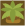
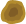
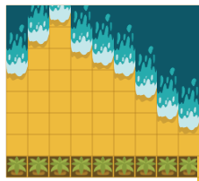

<!DOCTYPE html>
<html dir="rtl" align="right"></html>
<html>
<head>
   <meta charset="utf-8">
   <title>2022-FR-03_treasure_lidar</title>
   <script>
      window.stringsLanguage = 'ar';
   </script>
   <script class="remove" type="text/javascript" src="../../../_common/modules/pemFioi/importModules-1.1_M.js" id="import-modules"></script>
   <script class="remove" type="text/javascript">
      var modulesPath = '../../../_common/modules';
      importModules([
         'jquery-1.7.1', 'jquery-ui.touch-punch', 'raphael-2.2.1', 'JSON-js', 'grid-1.1',
         'beav-1.0', 'beaver-task-2.0', 'simulation-2.0', 'raphaelFactory-1.0',
         'delayFactory-1.0', 'simulationFactory-1.0', 'button-1.0',
         'platform-pr', 'installationAPI.01', 'miniPlatform',
         'randomGenerator-1.0', 'shape-paths-1.1', 'responsiveDOMConverter','fonts-loader-1.0', 'loader-buttonsAndMessages'
      ]);
   </script>
   <script type="text/javascript">
      var respEnabled = Beav.Navigator.supportsResponsive();
      // var respEnabled = false;
      if(respEnabled){
         importModules(['buttonsAndMessages_resp','taskStyles-0.3_M']);
         window.FontsLoader.loadFonts(['fontawesome']);
         task.getMetaData = function(cb) { cb({nbHints: 0, autoHeight: true}); }
      }else{
         importModules(['buttonsAndMessages','taskStyles-0.1']);
      }
   </script>
    
   <script class="remove" type="text/javascript">
    var json = {
       "id": "http://castor-informatique.fr/tasks/2016/2016-FR-01-not-rectangles/",
       "language": "en",
       "version": "en.01",
       "authors": "Idea: Mathias Hiron; Design: Arthur Charguéraud, Mathias Hiron; Implementation: Arnaud Le Grand",
       "translators": [],
       "license": "CC BY-SA 3.0",
       "taskPathPrefix": "",
       "modulesPathPrefix": "",
       "browserSupport": [],
       "fullFeedback": true,
       "acceptedAnswers": [],
       "usesRandomSeed": false
   };
   </script>
   <script type="text/javascript">
   var taskStrings = {
         introTitle: "المهمة المطلوبة",
         success: "تهانينا، لقد نجحت!",
         target: "الهدف",
         currentDistance: "المسافة",
         up: "أعلى",
         down: "أسفلn",
         nbMeasures: function(val,max) {
            return "عدد الخلايا التي تم اختبارها: "+val+" / "+max
         },
         tooManyMeas: function(max) {
            return "لا يمكنك أن تقوم بعدد أكبر من "+max+" من الاختبارات."
         },
         clickRetry: "اضغط لإعادة المحاولة أو ابدء من جديد.",
         errorCannotMeas: "لا يمكن أن تختبر هذه الخلية.",
		 errorTreasureFound: "لقد وجدت الكنز، يمكنك الآن أن تتحقق.",
         errorDistance: function(dir) {
            var str = "المسافة إلى ";
            str += (dir == 0) ? "الغابة " : "البحر ";
            str += " خاطئة."
            return str
         },
         errorWrongSpot: "الكنز ليس هنا.",
		 distance: function(sign, direction) {
            var strSign = "المسافة صحيحة من";
            if (sign > 0) {
               strSign = "الكنز \nأبعد من ";
            } else if (sign < 0) {
               strSign = "الكنز\nأقرب من ";
            }
            var strDirections = ["الغابة", "البحر", "الصخور"];
            return strSign + "\n" + strDirections[direction];
            }
      };
	  var enableRtl = true;
   </script>
   <script type="text/javascript" src="task.js"></script>
   <style>
      #error {
         min-height: 2em;
         /*text-align: center;*/
      }
      #displayHelper_graderMessage {
         color: red;
         font-weight: bold;
      }
   </style>
</head>
<body>
   <div id="task">
      <h1>الكنز</h1>
      <div id="tabsContainer"></div>
      <div id="taskContent">
         <div id="zone_1">
		 <p>لقد قام القندس بإخفاء كنزه تحت الرمال.</p>
		 
		 <p>وقد خزن جهاز الحاسوب الخاص به المسافة بين الكنز <span class="easy medium hard">و البحر، </span><span class="basic"> و الصخور ،</span> والمسافة بين الكنز و الغابة.</p>
		 		 
			<p><strong>كي تتمكن من إيجاد الكنز</strong>، قم بالضغط على بعض الخلايا . جهاز الحاسوب الخاص بالقندس سيخبرك لو كان الكنز أبعد أو أقرب من <span class="basic">الصخور و  </span>  الغابة<span class="easy medium hard"> و البحر</span>.</p>
			<p class="medium hard"><strong>في هذه النسخة، لا يمكنك أن ترى البحر<span class="hard"> ولا الغابة</span>.</strong></p>
         </div>
         <div id="zone_2">
            <div id="paper"></div>
            <div id="error"></div>
         </div>
         
         
         
         
         
         
      </div>
   </div><!-- task -->
   <div id="solution">
      <h2>الحل</h2>

      <h2>إنه علم الحاسوب!</h2>

  </div> <!-- task-solution -->
</body>
</html>
